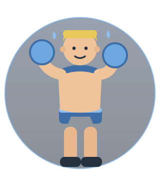

Il mio spazio di allenamento
Forza, settimana dopo settimana.
La mia scheda del macrociclo, le sessioni con i dati dell'orologio (collegamento da configurare) e il diario del percorso. Tutto in un posto solo.

Foto AI
Dove vuoi andare?

Le quattro sezioni
Diario
Pensieri e appunti sul percorso: come va, cosa imparo, cosa cambia.
Apri il Diario →Allenamenti
L'indice del programma: il ciclo annuale e le sue parti.
Apri Allenamenti →Sessioni
Il registro delle sedute con i dati dell'orologio: durata, cuore, calorie, serie.
Apri le Sessioni →Schede
La mia scheda del macrociclo 2026–2027, con figure e PDF da stampare.
Apri le Schede →